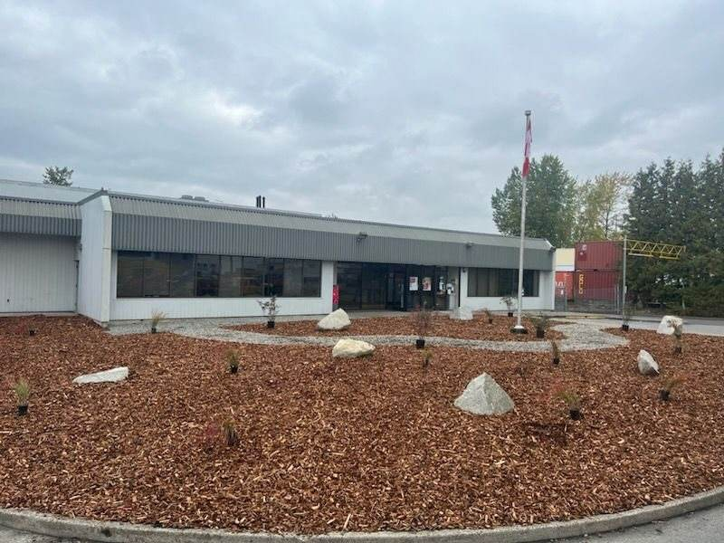
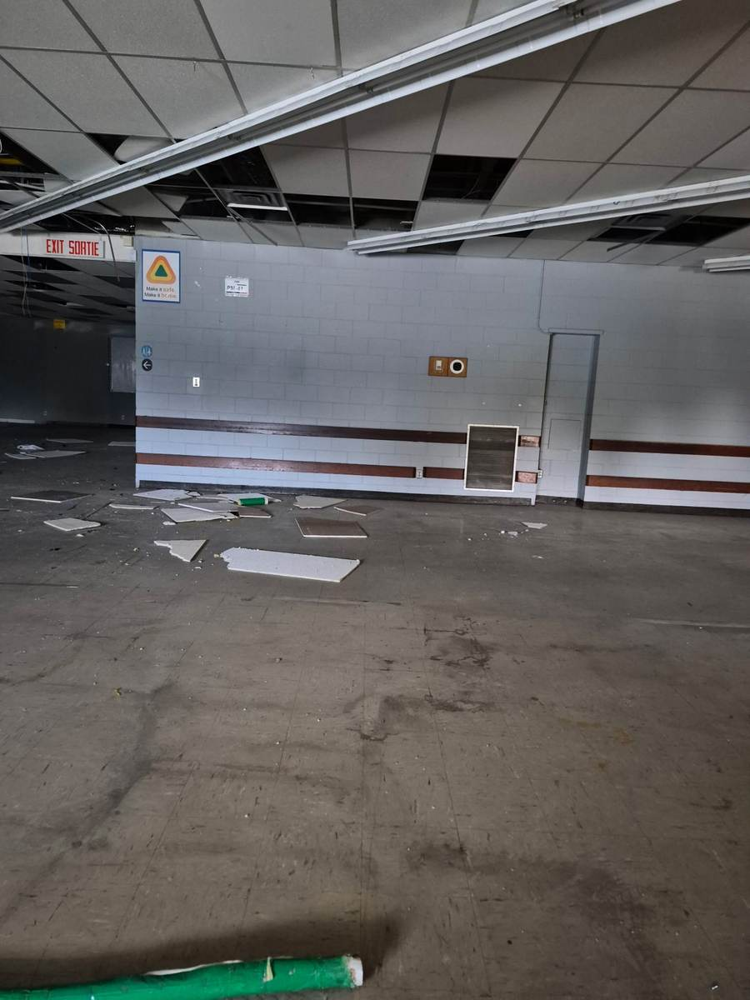
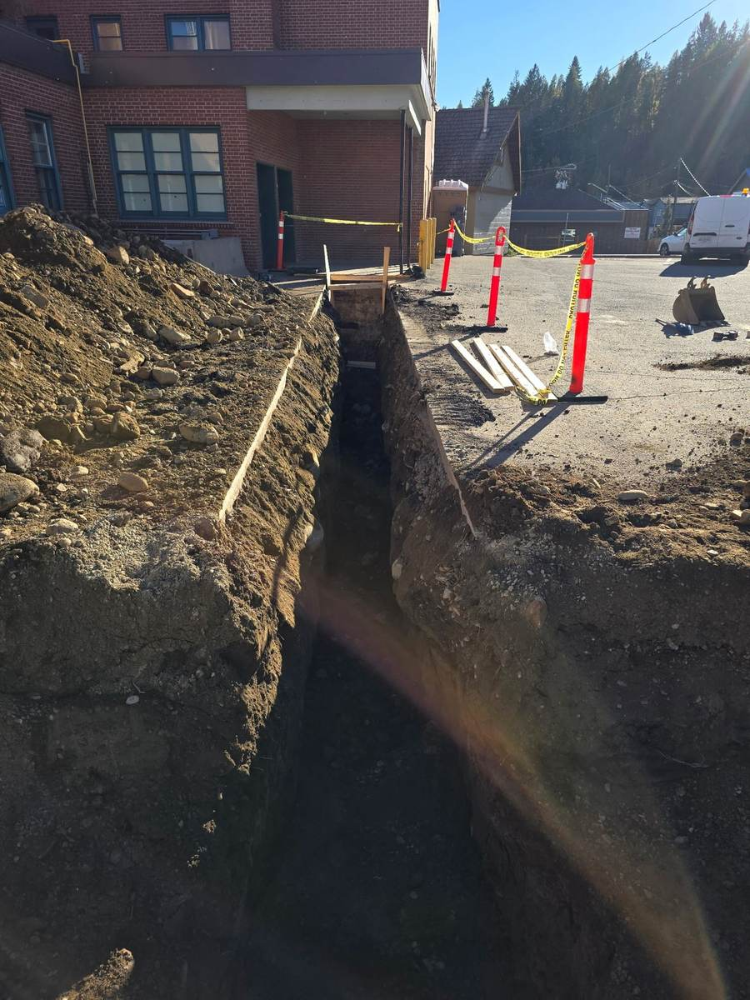
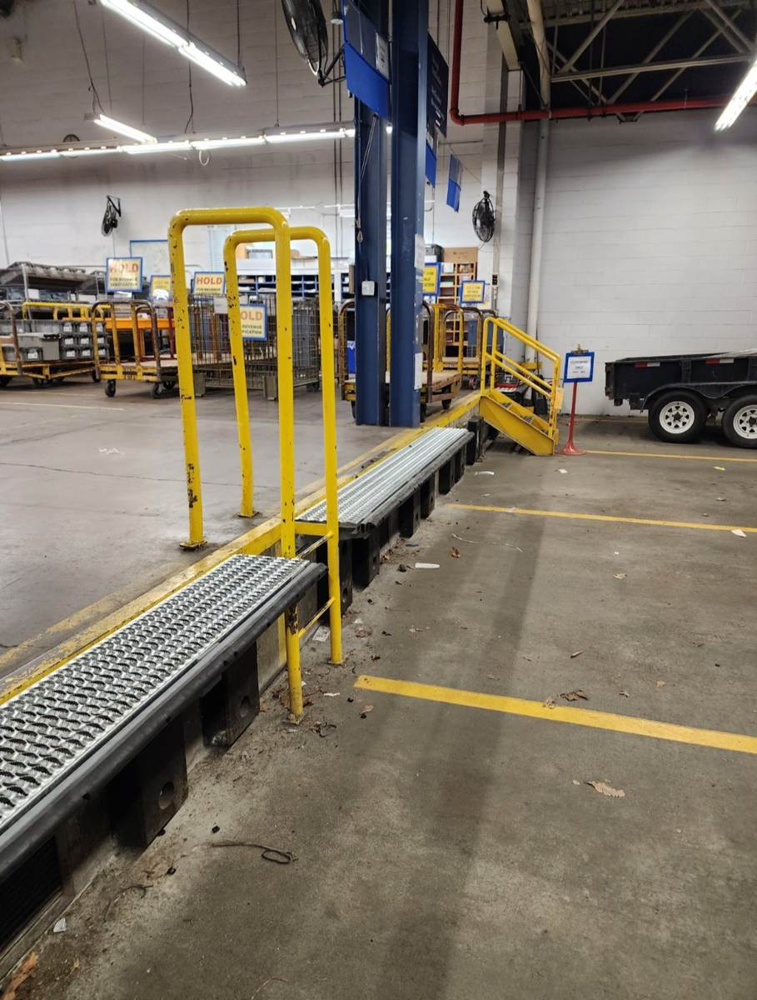

Completed & Active Work
10 Projects, Fully Documented.
Click into any project for the full story — goal, challenge, approach, outcome — and the complete photo set.
Completed
24 photos

Nanaimo, BC
Parking Lot Drainage & Catch Basins
Civil
View Project →
Completed
4 photos

Langley, BC
Landscaping, Bike Shelter & Repaving
Landscaping & Siteworks
View Project →
Completed
1 photo

Port Coquitlam, BC
Full-Scope Home Renovation
Residential Renovation
View Project →
Completed
22 photos

Coquitlam, BC
Emergency Securement & Cleanup
Emergency Response
View Project →
Completed
9 photos

Ponoka, AB
New Concrete Dock Platform
Concrete
View Project →
Completed
9 photos

Fort Qu'Appelle, SK
Brick Facade Repair
Masonry
View Project →
Completed
7 photos

Nanaimo, BC
Side Access Ramp & Automatic Door
Building Envelope
View Project →
In Progress
5 photos

Vancouver, BC
Compound Exterior Re-Cladding
Building Envelope
View Project →
In progress
2 photos

Kimberley, BC
New Water Service Connection
Civil
View Project →
Completed
1 photo

Victoria, BC
Loading Dock Extensions & Platforms
Loading Dock
View Project →